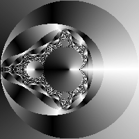
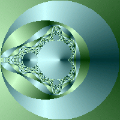
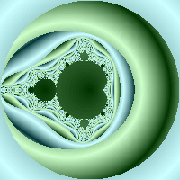

- Colors section
colors { define { gradient(361) { [0 0 0] [255 255 255] [0 0 0] } } } - Color assignment statements
set_color(deg(z)); - Resulting image

- Explanation
- The 'gradient' command creates a series of 361 colors
(for more detail see this)
that specify a smooth transition from black to white then
back to black again.
- The 'set_color' command selects an index from the color table corresponding the the angle (in degrees) that 'z' made with the origin when the while loop terminated (for more detail see this). Note that our color table defines entries from 0 to 360 so there is a corresponding entry for each angle in degrees (we won't generate any 'out of bounds' entries)
- The 'gradient' command creates a series of 361 colors
(for more detail see this)
that specify a smooth transition from black to white then
back to black again.
- Colors section
colors { define { // cyan shades gradient(361) { [204 255 255] [0 51 51] [204 255 255] } } define(360) { // green shades gradient(361) { [204 255 204] [0 51 0] [204 255 204] } } } - Color assignment statements
if(fmod($count, 2) == 0) { set_color(deg(z)); } else { set_color(360 + deg(z)); } - Resulting image

- Explanation
- Here we set up two gradients, each covering 360 indices (one per
degree). The cyan shades cover (0 - 359) and the green shades
color (360 - 719)
- We want to use the cyan set half the time and the green set half
the time so we use $count
(the number of iterations of the while loop that were executed
before the loop terminated) for this purpose. The statement:
if(fmod($count, 2) == 0)
Says "if count was even", the reason being that if $count was an even number then the remainder when dividing it by two will be zero. Note that when $count is odd, we add 360 to the z's angle to select the portion of our color table containing the green entries.It is also worth noting that we could have done an equivalent color assignment in a number of other ways, such as:
-
$value = deg(z); if(fmod($count, 2) == 1) { $value = $value + 360; } set_color($value); -
set_color(fmod($count, 2) * 360 + deg(z));
-
- Here we set up two gradients, each covering 360 indices (one per
degree). The cyan shades cover (0 - 359) and the green shades
color (360 - 719)
- Colors section
colors { define { // green shades gradient(361) { [0 51 0] [204 255 204] [0 51 0] } } define(360) { // cyan shades gradient(361) { [0 51 51] [204 255 255] [0 51 51] } } define(720) { // yellow shades gradient(361) { [204 153 0] [255 255 204] [204 153 0] } } } - Color assignment statements
$value = 0; if(fmod($count, 3) == 1) { $value = 360; } else { if(fmod($count, 3) == 2) { $value = 720; } } set_color($value); - Resulting image

- Explanation
- This example is just an extension of the previous, now we have
three sets of colors instead of two. The ranges are:
Range Of Values Color Shades 0 - 359 green 360 - 719 cyan 720 - 1079 yellow - When we use fmod with 3, we'll end up with a result of 0, 1 or 2. We use these resulting values to offset the z's angle by 0, 360 or 720 to select the appropriate color set
- This example is just an extension of the previous, now we have
three sets of colors instead of two. The ranges are:
- Colors section
colors { define { // green shades gradient(101) { [0 51 0] [204 255 204] [0 51 0] } } define(100) { // cyan shades gradient(101) { [0 51 51] [204 255 255] [0 51 51] } } } - Color assignment statements
$value = fmod(mag(z), 5) * 20; if(fmod($count, 2) == 1) { $value = $value + 100; } set_color($value); - Resulting image

- Explanation
- The color table used here uses two gradients - note that the size
of each gradient here is 101, not 361 as in the previous examples.
The reason we used 361 before is because before we were working
with angles (which range from 0 to 360), in this magnitude based
example we just chose 100 as that size results in a nice
looking range of colors.
- The magnitude of a complex number can really be anything - it is
the distance of the value from the origin (for more details see
this) so we need to
restrict its range to ensure the value we produce isn't outside
the bounds of our color table. My doing:
fmod(mag(z), 5)We get a value between 0 and 5 which we then multiply by 20 to produce a value between 0 and 100. Once we have that value, we use $count to alternately choose betwen the first and second set of colors.
- The color table used here uses two gradients - note that the size
of each gradient here is 101, not 361 as in the previous examples.
The reason we used 361 before is because before we were working
with angles (which range from 0 to 360), in this magnitude based
example we just chose 100 as that size results in a nice
looking range of colors.